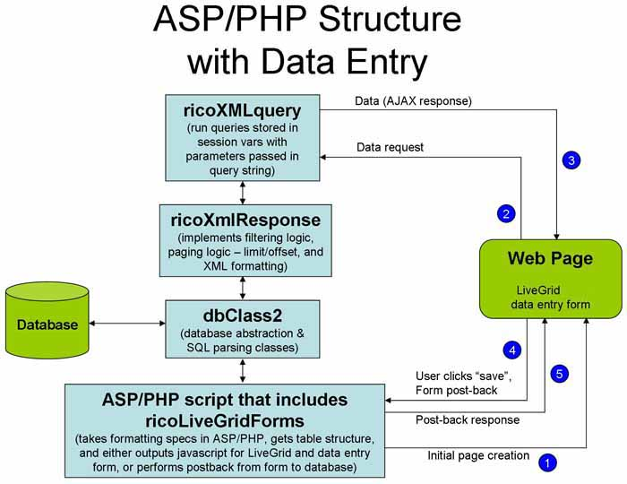
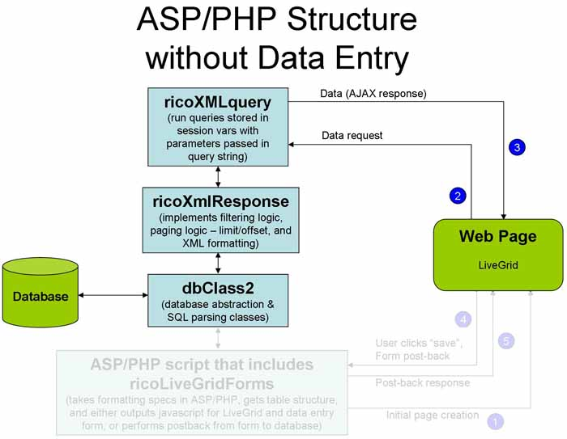

Rico LiveGrid フォームの利用
概要
このドキュメントがちょうど ASP に言及すると同時に、同一の機能が PHP と .net プラグインによって提供されます。
- ricoLiveGridForms.vbs を含む、新しい ASP ファイルを作成して下さい。
- 新しい ASP で、編集されるテーブルのそれぞれのフィールドを定義して下さい - 通常はフィールドごとに 1-3 行。
- 結果として ASP は、適当なグリッドを作成するだけで無く、隠された div に入力フォームを生成します。
- その ASP は "レコードの追加／編集／削除" のエントリもポップアップメニューに追加します。
- 追加または編集が選択された時、そのフォームは表示されます（編集が選択されれば、項目が満たされます）
- ユーザが保存ボタンをクリックする時、そのフォームは元の ASP に黙ってポストバックします。
- ASP はデータベースにデータを保存し、クライアントにレスポンスを送り返します。
- クライアントは、成功または失敗のメッセージをブックマークエリアに表示します
以下の二つの図解は、LiveGrid フォームページで、そしてフォームの無い LiveGrid ページで、
どのようにリクエストとレスポンスが流れるかについて表示します。
その二つの図解は ASP/PHP とラベルされていますが、.net にも適用されます（.net には dbClass2 が無い事を除いて）。


使い方
このクラスは、一つのテーブルのレコードの表示、挿入、更新そして削除をするのに、
必要なすべての機能を提供します。ASP スクリプトは、次の手順に従わなければなりません。
- クラスのインスタンスを一つ作成して下さい
set oForm=new TableEditClass
- SetTableName メソッドを呼んで下さい
oForm.SetTableName "customer"
- 任意に CanAdd、CanEdit、CanDelete、ConfirmDelete および／または 必要に応じて RecordName プロパティを設定して下さい
oForm.options("canAdd")=CanAdd
oForm.options("canEdit")=CanModify
oForm.options("canDelete")=CanDelete
- TableName がビューであるか、またはプライマリーキーが定義されていない場合、編集は利用不能です
- テーブルとフォームビューに見えるフィールドを、次の例外と共に、フィールドおよび列に表示するために、
AddEntryField または AddCalculatedField を呼んで下さい。
- エントリタイプ H は、決してクライアントへ送信されません。定義されたデフォルト値を取得してデータベースへ書き込みます。
- FormView フィールドプロパティに "exclude" がセットされていれば、そのフィールドはテーブルだけに表示されます。
- FormView フィールドプロパティに "hidden" がセットされていれば、そのデータは隠れたフォームフィールドに設定されます。
- 計算されたフィールドはテーブルビューにだけ表示されます（FormView=exclude と同じです）
- AddEntryField または AddCalculatedField のそれぞれの呼び出しの後、他のメソッドとプロパティは、
どのようにしてユーザにフィールドを表示するかを、コントロールするために起動する事が出来ます（例えば SortAsc）
これらのプロパティおよびメソッドの呼び出しは、最も最近追加されたフィールドのみに適用されます。
- DisplayPage を呼び出します - これはグリッドを表示するか、データベースの更新を実行します。
oForm.DisplayPage
タブフォーム
複数パネルや複数タブを持つフォームは Rico アコーディオンクラスを利用して、完全にサポートされます。
そのパネルのフィールドを定義するために、AddEntryField を呼ぶ前に、単に AddPanel を呼ぶだけです。
例えば。
' these fields appear on the first panel
oForm.AddPanel "Panel #1"
oForm.AddEntryField "field1", "Field #1", "T", ""
oForm.AddEntryField "field2", "Field #2", "T", ""
oForm.AddEntryField "field3", "Field #3", "T", ""
' these fields appear on the second panel
oForm.AddPanel "Panel #2"
oForm.AddEntryField "field4", "Field #4", "T", ""
oForm.AddEntryField "field5", "Field #5", "T", ""
oForm.AddEntryField "field6", "Field #6", "T", ""
あるいは panelIdx プロパティは、それが定義されるように、それぞれのフィールドにセットされる事が出来ます。
この場合、DisplayPage の前にいつでも AddPanel は呼ばれる事が出来ます。
' these fields appear on the first panel
oForm.AddEntryField "field1", "Field #1", "T", ""
oForm.CurrentField("panelIdx")=0
oForm.AddEntryField "field2", "Field #2", "T", ""
oForm.CurrentField("panelIdx")=0
oForm.AddEntryField "field3", "Field #3", "T", ""
oForm.CurrentField("panelIdx")=0
' these fields appear on the second panel
oForm.AddEntryField "field4", "Field #4", "T", ""
oForm.CurrentField("panelIdx")=1
oForm.AddEntryField "field5", "Field #5", "T", ""
oForm.CurrentField("panelIdx")=1
oForm.AddEntryField "field6", "Field #6", "T", ""
oForm.CurrentField("panelIdx")=1
oForm.AddPanel "Panel #1"
oForm.AddPanel "Panel #2"
フォームメソッド
- AddPanel "パネルの見出し"
- 入力フォーム上で、タブパネルのための見出しを定義します。
- DisplayPage
- グリッドを表示するか、"action" の値に応じてデータベースを更新します。
- DefineAltTable (TableName, FieldList, FieldData, Delim)
- 次の AltTable の呼び出しで利用される TabId を返す関数。
関連のあるフィールドの追加を記録するために、二番目のテーブルを定義して下さい。
メインテーブルのキーフィールド（達）も、 AltTable に存在べきです。
FieldList と FieldData は、二番目のテーブルに記録される定数や固定された関数を、
追加で定義する区切られた文字列です。
Delim は、FieldList と FieldData で利用されるデリミタキャラクタを定義します。
FieldList と FieldData は、同じ数の区切られたエントリを含まなければなりません。
- genXHTML
- 純粋な XHTML アウトプットを生成するために呼び出して下さい。
- SetDbConn (dbcls)
- dbClass を利用するためのインスタンスを定義します
oDB と言う名前のグローバルインスタンスが存在するのなら、このメソッドの呼び出しをしないでも利用する事が出来るでしょう。
フォームプロパティ
これら LiveGrid フォーム特有のものに加えて、すべての LiveGrid のオプションはプロパティとしてサポートされています。
- action (read only)
- 実行されているカレントアクションを指定します。table、ins、upd、del
- gridVar (read only)
- クライアントサイドの LiveGrid オブジェクトの名前を返します
- bufferVar (read only)
- クライアントサイドの LiveGrid バッファオブジェクトの名前を返します
- AutoInit
- 自動的にグリッドを初期化します（データの行を作成）
デフォルトは true です
- InitScript (read only)
- グリッドを初期化するための javascript コードを（文字列として）返します（AutoInit が false の時に利用する）
- TableFilter
- テーブルビューで利用される節がどこかを指定します（オプションの）
// only show records for the logged in user
$oForm->TableFilter = "userid=$myuserid";
- canAdd
- ユーザが新しいレコードを追加する事を許可する、デフォルトは true
- canEdit
- ユーザがレコードを編集する事を許可する、デフォルトは true
- canDelete
- ユーザがレコードを削除する事を許可する、デフォルトは true
- canClone
- ユーザがレコードを複製する事を許可する（既存のレコードの編集するが、新規で保存する）デフォルトは false
- updateURL
- この位置へのポストアップデートを行います、デフォルトはグリッドを生成したページ
- ConfirmDelete
- ユーザが削除ボタンをクリックした後で、確認のポップアップを表示するかどうかを指定するフラグ、
デフォルトは true
（ConfirmDeleteCol も見て下さい）
- DebugFlag
- デバッグメッセージを表示します、デフォルトは false
- RecordName
- 追加、編集および削除タイトルタグのカスタマイズ用の文字列、
デフォルトは "Record"
- SelectMaxLen
- セレクトボックスの文字数の最大値、デフォルトは 50。
- TableName (write only)
- 表示／編集されるテーブルまたはビュー（必須）
- TableSelectNew
- EntryType が N のフィールドの、新しい値を作成するためにユーザが選択した時に、
識別するために用いる文字列。デフォルトは "___new___"。
- showSaveMsg
- データベースの更新レスポンスの処理。
- full - すべてのレスポンスを表示する
- errors - エラーに関するすべてのレスポンスか、そうで無い場合は短いレスポンスを表示する（デフォルト）
- 入力フォームで、タブパネルを利用する時。
- panelWidth
- タブパネルのピクセル単位の幅。デフォルトは 500。
- panelHeight
- タブパネルのピクセル単位の高さ。デフォルトは 200。
- hoverClass
- タブパネルの上をホバーする時の CSS クラス。デフォルトは "tabHover"。
- selectedClass
- タブパネルを選択する時の CSS クラス。デフォルトは "tabHover"。
フォームイベント
いくつかのフォームイベントをフックする事が可能です。
- formOpen
- 入力フォームが表示される時、始動します。
oForm.options("formOpen")=
"alert('Questions? Please call the support desk.');"
- formClose
- 入力フォームが閉じられてすぐに、始動します。
- onSubmitResponse
- フォームがサーバに送信され、レスポンスを受け取って処理された後で、起動されます。
フィールド定義メソッド
- AddEntryField (ColumnName, Heading, EntryTypeCode, DefaultValue)
- グリッドへ新しい列と、ASP と PHP でのポップアップフォームにより新しいエントリフィールドを追加します。
- ColumnName
- データベーステーブルの列名（空白や角括弧を含む SQL をサポートしません、例えば [Apr 2005] ）
- Heading
- グリッドの列見出しやポップアップフォーム上に現れる名前
- EntryTypeCode
- どのように入力フォーム上に列が表示されるかについて、コントロールするコードを含む文字列
- S:
データエントリ中のドロップダウンセレクトリストとして、この列を表示します。
"SelectValues" または "SelectSql" オプションを利用して指定された値です。
どちらも指定されなければ、列の値は "select distinct" クエリを利用して得られます。
- R: ラジオボタンを利用してアイテムが表示される以外は "S" と同じです。
- SL,RL:
テーブルビューに検索された値を表示する以外は、S & R と同じです
（SelectSql により指定されたクエリを利用して）。
外部キーの列で典型的に利用されます。
表示する値を取得するための SQL は "SelectSql" オプションを利用して指定します。
- CL:
カスタムコントロールを利用して値が選択される以外は "SL" と同じです
（Rico ツリーコントロールのような）。
SelectCtl オプションは、カスタムコントロールの id を割り当てられるべきです。
- N:
"S" と同じですが、ユーザが新しい値を作成する事を許します。
典型的には "SelectValues" または "SelectSql" オプション 無し で利用されます。
- H: 列はユーザから隠されます（DefaultValue が、追加と編集でテーブルに保管されます）
- D: これはデータフィールドです（列が null を許していたら、空白が許されます）
- DT: 時間も含む以外は D と同じです
- I: 整数値（列が null を許していて、false が必要とされるなら、空白が許されます）
- F: 浮動小数点数（列が null を許していて、false が必要とされるなら、空白が許されます）
- B: 空白の無いテキストフィールド（フィールドが空で保存をクリックするとき、ユーザはフォームビューでのポップアップメッセージを取得します）
- T: 標準テキストフィールド（空白が許されます）
- TA: テキストエリアフィールド
- tinyMCE: tinyMCE
ライブラリを利用するリッチテキスト編集フィールド。
- DefaultValue
- フォームビューでの列のデフォルト値
.net で AddEntryField() と同等なのは、マークアップの一部として列フィールドを宣言する事です。
"ColData" 属性はデフォルト値を含みます。
ex2edit.aspx からの例は、ここにあります。
<Rico:Column runat='server' heading='Order#' width='60'
ColName='OrderID' EntryType='B' ColData='<auto>' />
- AddEntryFieldW (ColumnName, Heading, EntryTypeCode, DefaultValue, ColWidth)
- 列の（ピクセルでの）幅のためのエクストラパラメータが追加される以外は AddEntryField と同じです。
- AddCalculatedField (ColumnFormula, Heading)
- ColumnFormula は、どれも妥当な SQL 式またはサブクエリです。
サブクエリが表示されているテーブルの列への参照を必要としているなら、
列名はエイリアス "t." で始まらなくてはなりません
計算されたフィールドは、フォームビューでは無く、テーブルビューに表示されます。
- AddFilterField (ColumnName, FilterValue)
- ColumnName=FilterValue の内容のレコードを表示するだけです。
隠れたフィールドになります（エントリタイプ H）。
- ConfirmDeleteCol
- 最も最近追加された列の内容は、削除確認メッセージに含まれます
- SortAsc
- テーブルビューにて昇順で列をソートします（最も最近追加されたフィールドに適応されます）
- SortDesc
- テーブルビューにて降順で列をソートします（最も最近追加されたフィールドに適応されます）
フィールド定義プロパティ
これらの LiveGrid フォーム特有のものに加えて、すべての LiveGrid 列プロパティはサポートされます。
- AddQuotes
- false で、データベースに挿入するか更新する時は、列の値はバッククォートで囲まれません
（デフォルト=true）
これは SQL 関数呼び出しで、列を実装する事を可能にします。例えば。
oForm.AddEntryField "LastEditUser","","H","suser_sname()"
oForm.CurrentField("AddQuotes")=false
oForm.AddEntryField "LastEditDate","","H","getdate()"
oForm.CurrentField("AddQuotes")=false
- required
- 入力フィールドが空のままにしてもよいかどうかを指定する真偽値です
（デフォルトは、 列が null を許して EntryType が "B" で無ければ false 、そうで無い場合は true です）。
- AltTable (TabId)
- 代わりのテーブルにフィールドは保存されるべきである事を指定し、
TabId は以前の DefineAltTable の呼び出しによって返される値でなければなりません。
- TxtAreaRows
- エントリタイプが "TA" の列のための、フォームビューの時に
テキストエリアに表示する行数です（デフォルト 4）
- FilterFlag
- true なら、グリッドはその列のデフォルト値によってフィルタされます（デフォルト = false）
- TxtAreaCols
- エントリタイプが "TA" の列のための、フォームビューの時に
テキストエリアに表示する列数です（デフォルト 80）
- Help
- 指定されたテキストを含んでいるタイトルタグを作成します（フォームビューのみ）。
そして、ユーザがフィールドラベルの上をホバーするなら、バルーンヘルプとしてこのテキストを見るでしょう。例えば。
oForm.CurrentField("Help")="Date must be entered in mm/dd/yyyy format"
- pattern
- 正規表現を含んでいる文字列。
ユーザエントリは、その指定されたパターンにマッチする事を確実にするためにチェックされます。
少しの特別な値があります。
- "email" - メールアドレスを検証するためのテスト
- "float-unsigned" - 符号無し浮動小数点（実）数を検証するためのテスト
- "float-signed" - 符号付き浮動小数点（実）数を検証するためのテスト（EntryType が "F" の時、これがデフォルトです）
- "int-unsigned" - 符号無し整数を検証するためのテスト
- "int-signed" - 符号付き整数を検証するためのテスト（EntryType が "I" の時、これがデフォルトです）
いつでも、パターンを指定するヘルプエントリが含まれる事が推薦されます。
フィールドが検証に失敗したなら、そのヘルプテキストは、ユーザに表示されるエラーメッセージに含まれます。
例えば。
oForm.CurrentField("Help")="Enter date as mm/dd/yyyy"
oForm.CurrentField("pattern")="^\\d{1,2}/\\d{1,2}/\\d{4}$"
- min/max
- EntryType が "I" 、"F" 、そして "D" のフィールドの、最大／最少の許される値を指定します。
例えば。
oForm.AddEntryField "field1", "Field #1", "I", "0"
oForm.CurrentField("min")=1
oForm.CurrentField("max")=10
oForm.CurrentField("Help")="Enter a value between 1 and 10"
oForm.AddEntryField "field2", "Field #2", "D", Date()
oForm.CurrentField("min")="2000-01-01"
oForm.CurrentField("max")="2099-12-31"
oForm.CurrentField("Help")="Enter a value in the 21st century!"
- InsertOnly
- 挿入を実行する時は、データベースに単にこのフィールドを書いて下さい（デフォルト=false）。
oForm.AddEntryField "CreateDate","","H","getdate()"
oForm.CurrentField("AddQuotes")=false
oForm.CurrentField("InsertOnly")=true
- UpdateOnly
- 更新を実行する時は、データベースに単にこのフィールドを書いて下さい（デフォルト=false）。
oForm.CurrentField("UpdateOnly")=true
- ReadOnly
- true なら、データはエントリフォームで表示されますが、変更は出来ず、テキストは灰色です（デフォルト = false）。
- SelectValues
- N、S、そして R の EntryType のために、ユーザをフォームビューに案内する選択を指定して下さい。
供給されるなら、カンマで区切られた値の文字列で無ければなりません。例えば。
oForm.CurrentField("SelectValues")="Y,N"
- SelectSql
- SL 、CL 、そして RL の EntryType のために、SQL 検索ステートメントを指定します。
その検索ステートメントは 2 つの列を返さなければなりません。
一つ目はコードで、そして二つ目は値または説明のテキストです。例えば。
oForm.CurrentField("SelectSql")="select ID,Name from Customers"